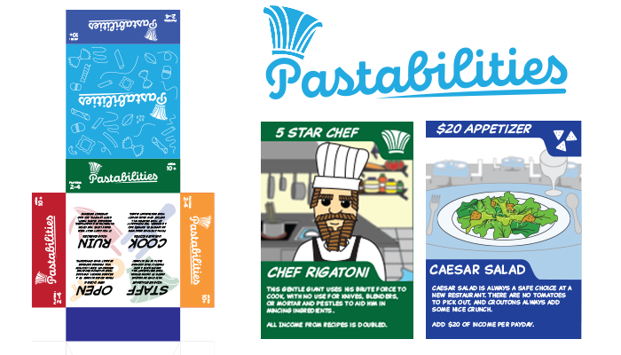
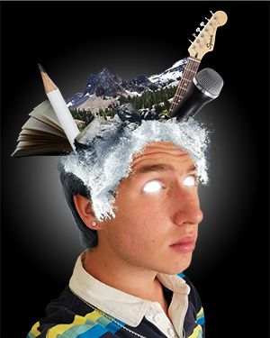
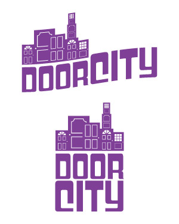

Porfolio
|  |
Original Deckbuilding Card Game (2021) Conceptualized an original deckbuilding card game called Pastabilities. Prototyped gameplay with a team of 2 and personally created logo, box art, instruction manual, and over 40 original card designs. Used a variety of mediums including Photoshop, Illustrator, and InDesign. Pastabilities won fourth place in the Technology Student Association National Conference for Board Game Design. It was also playtested and considered for production by executives at Hasbro. |
|  |  |
Surreal Portrait (2022) Using Adobe Photoshop, composited a collage of original and stock photographs to depict a surreal self-portrait. |
Logo Design (2022) Designed an original logo concept using Adobe Illustrator for a small alternative pop band. |
Animated Short Film (2021) For this solo project, I wrote, storyboarded, animated, scored, and recored foley for a 60 second short film. Apple Garageband was used for the original soundtrack and Adobe Animate was used for the animation. |
Mystery Short Film (2019) For a submission to my high school's Techonology Student Association (TSA) competition, I wrote, storyboarded, directed, and edited this three minute mystery film. Most of the editing was done by myself using Adobe Premiere Pro. |
{kind=link}